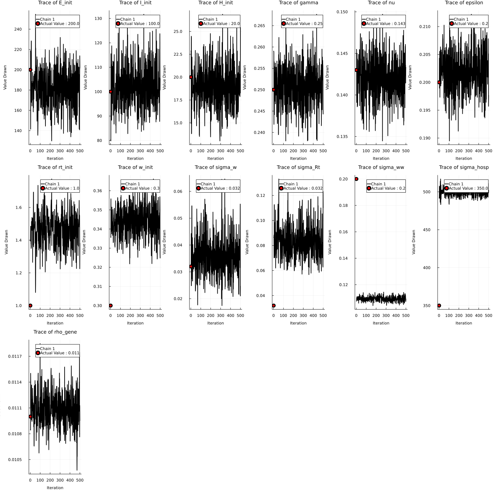

Generating Posterior Distribution Samples with UCIWWEIHR ODE compartmental based model.
This package has a way to sample from a posterior or prior that is defined in the future paper using the uciwweihr_fit.jl and uciwweihr_model.jl. We can then generate desired quantities and forecast for a given time period with the posterior predictive distribution, using uciwweihr_gq_pp.jl. We first generate data using the generate_simulation_data_uciwweihr function which is a non-mispecified version of the model, we will also be using prespecified effective reporduction curves and prespecified hospitalization probability curves.
1. Data Generation.
using UCIWWEIHR
# Running simulation function with presets
rt_custom = vcat(
range(1, stop=1.8, length=7*4),
fill(1.8, 7*2),
range(1.8, stop=1, length=7*8),
range(0.98, stop=0.8, length=7*2),
range(0.8, stop=1.1, length=7*6),
range(1.1, stop=0.97, length=7*3)
)
w_custom = vcat(
range(0.3, stop=0.38, length=7*5),
fill(0.38, 7*2),
range(0.38, stop=0.25, length=7*8),
range(0.25, stop=0.28, length=7*2),
range(0.28, stop=0.34, length=7*6),
range(0.34, stop=0.28, length=7*2)
)
params = create_uciwweihr_params(
time_points = length(rt_custom),
Rt = rt_custom,
w = w_custom
)
df = generate_simulation_data_uciwweihr(params)
first(df, 5)| Row | obstimes | log_ww_conc | hosp | rt | wt |
|---|---|---|---|---|---|
| Int64 | Float64 | Int64 | Float64 | Float64 | |
| 1 | 1 | 0.271684 | 16 | 1.0 | 0.3 |
| 2 | 2 | 0.517405 | 27 | 1.02963 | 0.302353 |
| 3 | 3 | 0.498941 | 24 | 1.05926 | 0.304706 |
| 4 | 4 | 0.764782 | 23 | 1.08889 | 0.307059 |
| 5 | 5 | 0.814226 | 32 | 1.11852 | 0.309412 |
2. Sampling from the Posterior Distribution and Posterior Predictive Distribution.
Here we sample from the posterior distribution using the uciwweihr_fit.jl function. First, we setup some presets, then have an array where index 1 contains the posterior/prior predictive samples, index 2 contains the posterior/prior generated quantities samples, and index 3 contains the original sampled parameters for the model.
data_hosp = df.hosp
data_wastewater = df.log_ww_conc
obstimes = df.obstimes
param_change_times = 1:7:length(obstimes) # Change every week
priors_only = false
n_samples = 50
samples = uciwweihr_fit(
data_hosp,
data_wastewater,
obstimes,
param_change_times,
priors_only,
n_samples
)
model_output = uciwweihr_gq_pp(
samples,
data_hosp,
data_wastewater,
obstimes,
param_change_times
)
first(model_output[1][:,1:5], 5)| Row | iteration | chain | data_wastewater[1] | data_hosp[1] | data_wastewater[2] |
|---|---|---|---|---|---|
| Int64 | Int64 | Float64 | Float64 | Float64 | |
| 1 | 1 | 1 | 0.1934 | 23.0 | 0.391457 |
| 2 | 2 | 1 | 0.307063 | 19.0 | 0.666912 |
| 3 | 3 | 1 | 0.198078 | 14.0 | 0.318647 |
| 4 | 4 | 1 | 0.347881 | 12.0 | 0.590294 |
| 5 | 5 | 1 | 0.252786 | 20.0 | 0.351035 |
first(model_output[2][:,1:5], 5)| Row | iteration | chain | E_init | I_init | H_init |
|---|---|---|---|---|---|
| Int64 | Int64 | Float64 | Float64 | Float64 | |
| 1 | 1 | 1 | 187.323 | 101.047 | 16.3953 |
| 2 | 2 | 1 | 174.05 | 105.764 | 16.1435 |
| 3 | 3 | 1 | 218.14 | 67.63 | 15.8025 |
| 4 | 4 | 1 | 223.138 | 75.1263 | 17.6909 |
| 5 | 5 | 1 | 259.029 | 68.3777 | 17.78 |
first(model_output[3][:,1:5], 5)| Row | iteration | chain | E_init_non_centered | I_init_non_centered | H_init_non_centered |
|---|---|---|---|---|---|
| Int64 | Int64 | Float64 | Float64 | Float64 | |
| 1 | 26 | 1 | -0.253546 | 0.0523322 | -0.720944 |
| 2 | 27 | 1 | -0.518992 | 0.288177 | -0.771303 |
| 3 | 28 | 1 | 0.362805 | -1.6185 | -0.839508 |
| 4 | 29 | 1 | 0.462761 | -1.24368 | -0.461822 |
| 5 | 30 | 1 | 1.18058 | -1.58112 | -0.444001 |
3. MCMC Diagnostic Plots/Results Along with Posterior Predictive Distribution.
We also provide a very basic way to visualize some MCMC diagnostics along with effective sample sizes of desired generated quantities(does not include functionality for time-varying quantities). Along with this, we can also visualize the posterior predictive distribution with actual observed values, which can be used to examine forecasts generated by the model.
uciwweihr_visualizer(gq_samples = model_output[2],
actual_rt_vals = df.rt,
actual_w_t = df.wt,
save_plots = true)Effective Sample Size for E_init for Chain 1: 20.0
Effective Sample Size for I_init for Chain 1: 22.0
Effective Sample Size for H_init for Chain 1: 64.0
Effective Sample Size for gamma for Chain 1: 14.0
Effective Sample Size for nu for Chain 1: 24.0
Effective Sample Size for epsilon for Chain 1: 18.0
Effective Sample Size for rt_init for Chain 1: 29.0
Effective Sample Size for w_init for Chain 1: 8.0
Effective Sample Size for rho_gene for Chain 1: 13.0
Effective Sample Size for tau for Chain 1: 12.0
Effective Sample Size for df for Chain 1: 83.0
Effective Sample Size for sigma_hosp for Chain 1: 30.0
Plot saved to plots/mcmc_diagnosis_plots.png
Plot saved to plots/mcmc_time_varying_parameter_plots.png3.1. MCMC Diagnostic Plots.

3.2. Time Varying Parameter Results Plot.